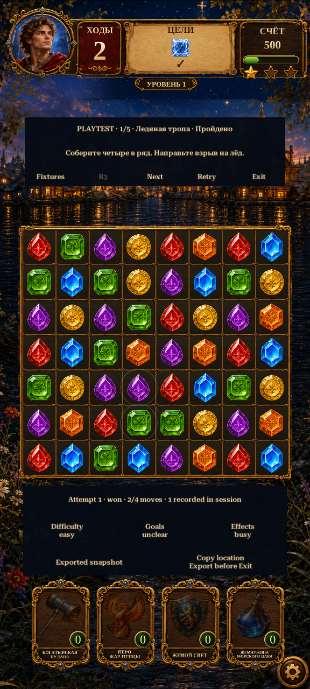

Gameplay Mechanics R5 · Playtest records
Attempt recording and optional feedback in the five-round sandbox. The campaign and its saves remain unchanged.

Actual576×1280 Unity captures. The ratings shown were entered by an automated test; they are not user feedback or a difficulty finding.
Record a manual session
- Enter Play Mode and reach Home. Choose Legends of Rus → Development → Gameplay Mechanics Sandbox.
- Play a round without reading the R4 solution. Tap Difficulty, Goals and Effects to cycle optional ratings. Leave them unrated when you have no opinion.
- Use Retry or Next to continue. Wins, losses and interrupted attempts are kept separately; an animation interrupted by navigation is marked unsettled.
- Press Export session JSON before Exit or stopping Play Mode. Copy location gives the latest file path. Files are stored under
Application.persistentDataPath/MechanicsPlaytests. Nothing is uploaded.
Records are in memory until explicit export. Each export is a new snapshot; export again after more play or feedback. A currently running attempt stays ongoing in that file. Leaving the sandbox discards unexported memory. The last200 closed attempts plus one active attempt are retained; discarded counts are reported.
Inspect an exported session locally
The file is read in this browser only. Automated examples are clearly identified; no win-rate or balance claim is inferred.
*Foreground session time, including animations and decision time. It is not an FPS or response-time measurement. Background time and time after a terminal result are excluded.
Implementation report · Test evidence · Changed files · Automated example JSON